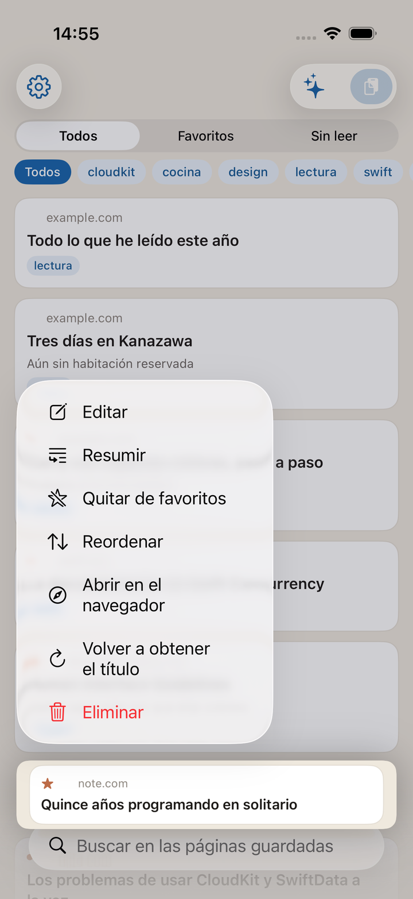
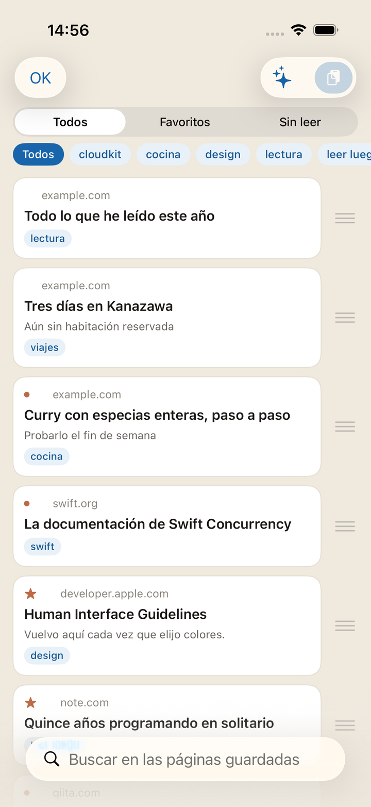
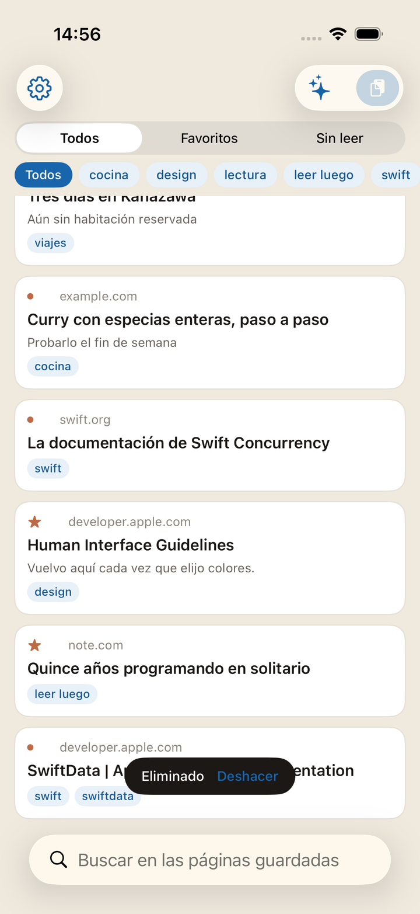

Hay dos entradas. En las dos, el guardado termina en el momento en que pulsa.
Abra una página en Safari o donde sea, pulse el botón de compartir y elija Kakesu. Si no aparece en la lista, active Kakesu desde «Más» en la hoja para compartir.
En cuanto lo ha elegido, ya está guardado. La pantalla que sigue permite añadir etiquetas y una nota ahí mismo, pero puede cerrarla sin poner nada y completarlo luego en la pantalla de edición. Si pulsó por error, «Deshacer», arriba a la izquierda, retira solo el elemento recién creado.
Con una URL en el portapapeles, abra la app y pulse el botón de pegar, arriba a la derecha.
Los títulos y las miniaturas se rellenan solos, después. Justo tras guardar solo se ven URL; la app las va buscando mientras esté abierta. Guardar donde hay mala cobertura no hace que falle el guardado en sí.
Guardar dos veces la misma página no añade una segunda
(los parámetros de seguimiento como ?utm_source= y un www. de diferencia se ignoran).
Lo no leído lleva un punto; los favoritos, una estrella.
Se busca en el texto de la página, no solo en el título. Tras guardar, junto al título se conserva el principio del texto. Una palabra que recuerde del cuerpo desentierra la página aunque el título no baste.
El botón con destellos, arriba a la derecha de la lista, le deja preguntar con sus palabras. Pregunte «¿Cómo se usa esto?», «¿Qué he guardado últimamente?» o «¿Dónde se me acumula lo no leído?»: los elementos consultados quedan bajo la respuesta, listos para abrirse.
Todo ocurre en su dispositivo. Ni la pregunta ni la respuesta salen fuera. Al modelo se le entrega un puñado de elementos cercanos a la pregunta — título, etiquetas, nota, nombre del sitio — más recuentos y sus etiquetas más usadas. Las URL completas no se entregan nunca.
Puede seguir preguntando. Una repregunta como «¿Cuándo lo guardé?» se entiende a la luz de lo anterior. Para cambiar de tema, pulse «Nueva conversación» arriba a la izquierda: todo lo anterior se borra. La conversación no se almacena en ninguna parte, así que cerrar la pantalla también la borra.
«Copiar», bajo la respuesta, la toma tal cual. Pregunte dónde está este sitio y la respuesta llega como un enlace que puede pulsar. Solo este sitio llega a ser un enlace pulsable. Las URL de las páginas que ha guardado nunca se escriben en una respuesta.
El botón aparece solo en dispositivos compatibles con Apple Intelligence (iOS 26 o posterior), y con ello activado en los ajustes de iOS. En los demás no hay botón alguno.
Mantenga pulsado un artículo y elija «Resumen»: está ahí nada más abrirse. No es una pantalla para leer. Es para decidir si lo lee ahora.
Desde ahí puede seguir preguntando por ese artículo. Las respuestas se apoyan en el texto de esa página y nada más; no se mezcla el resto de lo guardado. Una página cuyo texto no se pudo recuperar no se puede resumir, y así lo dice.
Las cinco conversaciones de artículos más recientes quedan en su dispositivo, para que retome donde lo dejó al volver a abrir el mismo artículo. No van a iCloud, ni pasan a un dispositivo nuevo.
Las que quedan están arriba a la izquierda de la pantalla Preguntar (el bocadillo). Bórrelas de una en una, o de golpe con «Borrar todas», arriba a la derecha. Desde la pantalla del resumen, la papelera de arriba a la izquierda borra solo la conversación de ese artículo.
Como «Preguntar», aparece en el menú solo en dispositivos compatibles con Apple Intelligence (iOS 26 o posterior).


Se abre dentro de la app. Al cerrar vuelve al mismo punto de la lista. Con abrirlo queda marcado como leído.
Muestra solo el texto, sin publicidad ni adornos. Está activado por omisión. Para ver las páginas tal cual, desactive Ajustes → Visualización → «Abrir en el Lector». Las páginas sin soporte de Lector se abren igualmente como siempre.
El tamaño del texto y el color del fondo se cambian dentro del propio lector.
Las páginas que piden iniciar sesión, o una extensión, pasan desde aquí a Safari.

Pulsación larga → Editar cambia el título, las etiquetas, la nota y el estado de no leído.
El orden se cambia con pulsación larga → Ordenar → arrastrar con el dedo. No se puede mientras acota o busca (mover una parte de lo visible rompería el orden del conjunto).
Para un elemento cuyo título nunca llegó, pulsación larga → Recuperar de nuevo envía la app otra vez.
Ajustes → Silenciar lista sus etiquetas con su recuento. Deslice a la izquierda la fila de una etiqueta para renombrar y borrar. Ambas actúan sobre todos los elementos a la vez.
Borrar una etiqueta no borra los marcadores. Solo se la quita. Cuando las etiquetas se multiplican, la búsqueda de esa misma pantalla las acota.


Deslice a la izquierda, o pulsación larga → Borrar. Justo después aparece «Deshacer» unos segundos. Púlselo y el elemento vuelve. Déjelo pasar y solo entonces desaparece.
Ajustes → Silenciar. Registre una cadena presente en la URL o el título y todo lo que coincida sale de la lista. También se ocultan etiquetas enteras. En ambos casos, la regla permanece y se activa o se desactiva.
El número de ocultos se muestra bajo la lista. Al pulsarlo se abren los ajustes, donde espera «Silenciar».


Una vez por semana, todo lo guardado se escribe como JSON en la carpeta Kakesu de iCloud Drive. Se abre desde la app Archivos y permanece aunque borre la app.
Se conservan las ocho últimas copias; las más antiguas van cayendo.
Ajustes → Datos ofrece en cualquier momento exportar (el destino lo elige usted) e importar. Al importar se omiten las URL ya presentes y se añade solo lo que falta. Nunca se sobrescribe. En esa misma pantalla figura la fecha de la última copia automática.
Una URL guardada es su historial, sin más. Si su teléfono pasa por otras manos, active Ajustes → Bloqueo de la app. Al abrirla se pedirá entonces Face ID / Touch ID, o el código del dispositivo.
El bloqueo protege solo las pantallas de la app. La copia JSON depositada en iCloud Drive sigue siendo legible desde la app Archivos. Si también quiere ocultar la copia, gestiónela desde Archivos.
Sin código en el dispositivo la función no se puede usar (el ajuste deja de poder pulsarse).
El bloqueo nunca se aplica al guardado desde la hoja para compartir. Una comprobación antes de guardar perdería justo las páginas que quería echar dentro.

«Acerca de», en los ajustes, abre los términos de uso y la política de privacidad. La versión de la app está en el mismo sitio: indíquela cuando escriba.
Ponga el widget en la pantalla de inicio y mostrará cuántos quedan sin leer. El tamaño pequeño cita un título reciente; el mediano, hasta tres. Al pulsarlo se abre la app.
Con el bloqueo activado muestra solo la cifra. Ni títulos ni nombres de sitios en el widget. La pantalla de inicio queda a la vista, sin cerradura delante.
Mientras el dispositivo está bloqueado, la búsqueda no responde. No hay motivo para entregar lo que ha guardado a un dispositivo sin desbloquear. Guardar sí funciona bloqueado. Poder lanzar algo dentro es lo que importa, así que eso no se detiene.
Elija Kakesu en «Apps» dentro de la app Atajos. También funcionan en automatizaciones.
Mientras haya iniciado sesión con la misma cuenta de Apple, sencillamente está ahí. No hay cuenta que crear. Para detener la sincronización, desactive Kakesu en Ajustes de iOS → cuenta de Apple → iCloud.
Para lo que no esté escrito aquí, la página de contacto es el camino.